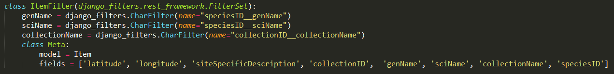
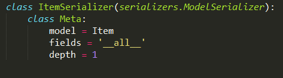
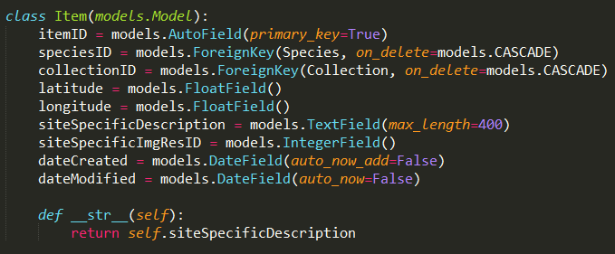

Create a join between models in the Django Web Framework.
While creating a web API using the Django Web Framework, we came across the problem of joining tables (models) together to produce a JSON string that held information from separate tables.
I went to the online Django RESTful API documentation for FilterSets and FilterClasses. I looked into serializers and modifying model classes in order to create the joins.
Filter Class Example:
Serializer Example:
Model Example:
As shown in the images above, I was able to specify primary and foreign key relationships between models. The serializer class was used to turn the model data into an appropriate format (e.g. JSON, XML), controlling the depth of serialisation. Models related to this model via foreign key were added to the serialized data, using the key as reference.
This was a difficult task. I wanted to return a JSON object that contained values from up to three models, without the foreign models JSON being a JSON object inside the main JSON object. All members of the project team tried finding a solution to this problem. We tried many approaches, including grabbing an instance of the models we wanted and creating custom serializer classes, using Django's generics.ListCreateAPIView, and making filter classes (see below for a discussion of the solution chosen).
Another big challenge was learning how to use Django and Django REST API in a very short space of time. It required dedicating a lot of time to reading the documentation, while managing a heavy work load in other papers. It also required communicating regularly with my team. I was able to get most of the functionality going on my own, and my teammates helped me resolve some particularly challenging aspects.
As the task deadline was approaching, we decided to use the depth field in the serializer class, and to create a unique filter class. This allowed us to return a JSON object, but anything that wasn’t in the direct table we were serializing became a nested JSON object. Although this solution worked, it means more effort for any programmer looking to access our API in the future. This is because the programmer will have to unwrap the returned JSON to get at all the information required.
Time-Management: This task required a lot more learning than the previous one in the same time span. It was necessary to dedicate a lot of my attention to read all the material required to complete the task. Therefore, I had to carefully manage my time alongside the heavy work load of my other papers, and my sporting and social commitments. This enforced my going straight to primary sources for information (i.e. documentation and textbooks), rather than sitting though long video tutorials that may or may not have the information I require.
Django: Django is a free python-based tool used to create websites with a very strong hierarchical structure. It works on a MVC based architecture – Model, View, Controller. (The Django, MVC terminology differs slightly from that of C#. In Django, View is the term used for the application logic element, and Templates is the term used for the display element). Django REST API: - It provides a way of serializing model data and serving it to users via http GET requests. The REST API includes libraries to filter the information returned based on user specification. It is a very versatile tool as it can return either JSON or XML.
Django REST Framework Docs: http://www.django-rest-framework.org/
CommSoft Production Branch: BotanicalGardens3.0
CommSoft master Branch>Docs>Django_REST_FRAMEWORK_GUIDE.